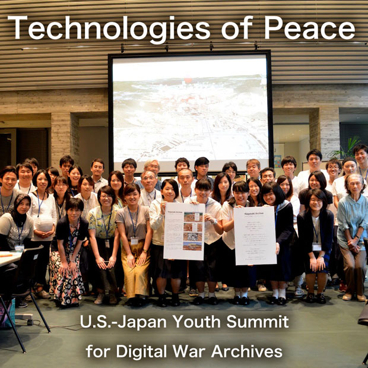

Prize & Nominated
- The 5th Peace Prize, The Peace Studies Association of Japan, 2015
- FOSS4G (Free and Open Source Software for Geospatial conference) Seoul 2015, the Best Cutting-Edged Map
Award, 2015
- Digital Humanities Awards 2013, 1st Runner Up of Best DH visualization or infographic, 2014
- The JAPAN PRIZE 2013, Selected as An Excellent Work of Audiovisual Division, Innovative Media Category,
2013
- ASIA DIGITAL ART AWARD 2011, Grand Prix of Entertainment Division, 2012
- eAT KANAZAWA Digital Creative Award 2012, Jury's Special Award, 2012
- iPhone iPad Apps Awards 2011, Grand Prix, 2011
- Mashup Awards 7, Google Prize, 2011
- Winner nomination of Yahoo!JAPAN Internet Creative Award 2011, 2011
Exhibition
- Hidenori Watanave: FOSS4G (Free and Open Source Software for Geospatial conference) NA 2016, Raleigh
Convention Center,Raleigh, USA- 5.2-5,2016
- Hidenori Watanave: FOSS4G (Free and Open Source Software for Geospatial conference) Seoul 2015, The K
Seoul Hotel, Seoul, Korea- 9.16-19,2015
- Hidenori Watanave Laboratory at Tokyo Metropolitan University: Hiroshima municipal Motomachi high school
festival
- 7.11,2015
- Hidenori Watanave Laboratory at Tokyo Metropolitan University: The evolving museum 2014; JP TOWER KITTE- 1.21,2014
- Nagasaki Archive Production Committie: The Pre-event of Nagasaki international peace movie forum; The
Special Exhibit Space of Nagasaki Hamano-machi Arcade- 8.24,2013
- Hidenori Watanave Laboratory at Tokyo Metropolitan University + Photon, Inc.: “Pluralistic Digital Archives
Series and VR-AR Interfaces”;TOKYO DESIGNERS WEEK 2012 Design Next Exhibition，Jingu-Gaien, Tokyo- 10.30~11.5, 2012
- Hidenori Watanave Laboratory at Tokyo Metropolitan University: “Hiroshima Archive”;Digital Contents Expo
2012, Miraikan, Tokyo- 10.25-27, 2012
- Hidenori Watanave: “Hiroshima Archive”; "No more Hibakusha - Succession meeting of memory inheritance"
establishment meeting, Yurakucho Asahi Hall, Tokyo- 7.15,2012
- Hiroshima Archive Production Committee: “Hiroshima Archive”, Asia Digital Art Award Exhibition 2011,
Fukuoka Asian Museum - 3.17~27.2012
- Hiroshima Archive Production Committee: “Hiroshima Archive”, Project NOW!'s “Revival of memory ”Exhibition,
Hiroshima-shi
- 3.10~24.2012
- Hidenori Watanave, Makiko Suzuki Harada and Yurina Takata: “Hiroshima Archive”, Google Developers Day
2011, Pacifico Yokohama - 11.2.2011
- Hidenori Watanave, Kensuke Takada, Makiko Suzuki Harada, Yasumitsu Sato, Shota Tsuboyama and Taiki Yamada:
“Hiroshima Archive”, Entertainment Computing 2011, National Museum of Emerging Science
and Innovation (Miraikan) - 10.8.2011
- Hidenori Watanave, “Hiroshima Archive” , “Nagasaki Archive” and “The Japan Earthquake Archive” : “Future
of Digital Archive”- the related event of “UIA Tokyo 2011 (The 24th World Congress of Architecture)”,
Tokyo International Forum - 9.28.2011
- Hiroshima Archive Production Committee, “Hiroshima Archive”:The exhibition of picture-book
without picture and the world biggest picture 2012, Old Branch Office of Nippon Ginko - 9.17.2011~10.1.2011
- Nagasaki Archive Committee and Hiroshima Archive Committee，“Nagasaki Archive”and “Hiroshima
Archive”：GOGBOT FESTIVAL 2011，Enschede, Netherlands - 9.8.2011~9.11.2011
- Hidenori Watanave, Tomoyuki Torisu and Ryo Osera: “Nagasaki Archive”, “Photooverlays of the Japan Earthquake”
and “Hiroshima Archive”; 2011 fiscal year special exhibition at Sasebo City Museum Shimanose Art
Center
- 7.15.2011~9.4.2011
TV & Radio
- FUJI Television - 8.6.2015
- TV Asahi - 8.6.2015
- ABC - Australian Broadcasting Corporation "70 years after Hiroshima, local school girls racing to capture
survivor stories" - 8.5.2015
- Tokyo MX "Tokyo Classo!" - 7.18.2015
- NHK Hiroshima news - 6.21.2015
- NHK WORLD - 5.1.2015
- NHK News - 11.13.2014
- NHK "NEWS WEB"- 8.8.2014
- Nihon TV "NEWS ZERO" - 8.5.2014
- NHK News - 8.3.2014
- NHK Hiroshima news - 6.23.2014
- Weathernews "SoLive 24 ch."- 5.13.2014
- TV Asahi "Tokyo-site" - 4.28.2014
- NHK Educational - 2.6.2014
- NHK News - 8.6.2013
- Bunka-Housou “Kunimaru-Japan” - 9.18.2012
- TBS “N-STA” - 8.8.2011
- NTV “ZIP!” - 8.8.2011
- NHK WORLD - 8.3.2011
- NHK Hiroshima news - 7.10.2011
- NHK Hiroshima news special program- 6.2.2011
- NHK Hiroshima news - 5.29.2011
Newspapers
- The Niigata Nippo - 12.27.2015
- The Mainichi Newspapers - 10.27.2015
- The Chugoku Shimbun - 7.23.2015
- The Chugoku Shimbun - 7.14.2015
- Aceh Post "Dari Korban Bom Hiroshima ke Tsunami Aceh" - 12.16.2014
- The Chugoku Shimbun - 6.23.2014
- The Chugoku Shimbun- 6.2.2014
- Kanagawa Shimbun - 2.17.2014
- The Chugoku Shimbun - 2.6.2014
- The Asahi Shimbun - 2.3.2014
- The Asahi Shimbun - 8.6.2013
- The Asahi Shimbun - 8.11.2012
- Nihon Keizai Shimbun - 8.9.2012
- The Asahi Shimbun - 8.6.2012
- The Tokyo Shimbun - 7.16.2012
- The Chugoku Shinbun - 1.9.2012
- Tokyo Shinbun- 8.19.2011
- Mainichi Shinbun - 8.4.2011
- Mainichi Shinbun - 8.2.2011
- Asahi Gakusei Shinbun - 7.13.2011
- The Chugoku Shinbun - 7.13.2011
- Asahi Shinbun - 7.11.2011
- Yomiuri Shinbun - 7.9.2011
- Asahi Shinbun - 4.28.2011
- The Chugoku Shinbun - 4.8.2011
Web
- Engineer type- 8.12.2015
- Gendai Buisiness- 8.11.2015
- Takei's Take "Preserving History Through Youth & Technology l Hiroshima Part 4 | Takei's Take Japan" - 8.30.2014
- Engineer type- 8.15.2014
- gazeta.pl "Życie z piętnem bomby atomowej. "Dlaczego ludzie boją się nas, ocalałych" - 8.6.2014
- The Asahi Shimbun- 3.28.2014
- CodeIQ Magazine - 3.11.2014
- “The Book Project” Nobuhiko Kodera's Mail Magazine - 8.3.2012
- MIT Communication Innovators Labo, CoLab Radio 「The Dynamic East Japan Earthquake Archives」 - 2012年3月6日
- @IT - 12.26.2011
- Famitsu.com - 9.9.2011
- Foreign Press Center Japan “Send out Memories of A-Bomb Suffering to the World via Web Communities (August
25, 2011) ” - 8.25.2011
- Mado-no-Mori(Windows Forest) - 8.8.2011
- ASIAJIN“The Hiroshima Atomic Bomb Archive on 'Google Earth''Hiroshima Archive'" - 8.7.2011
- greenz.jp - 8.5.2011
- The Mainichi Daily News - “Hiroshima A-bomb archive site with 3-D satellite map proving popular”- 2011年8月4日
- Mainichi Shinbun - Mainichi.jp- 8.4.2011
- Mainichi Shinbun - Mainichi.jp- 8.2.2011
- ky.it (Italy) - “Hiroshima ricordata in 3D per il 66esimo anniversario” - 7.30.2011
- Penn Olson - The Asian Tech Catalog - “Google Earth, Street View As Historical Record in Japan” - 7.12.2011
- The Chugoku Shinbun - web edition - 7.12.2011
- Asahi Shinbun - asahi.com - 7.11.2011
- Yomiuri Shinbun - Yomiuri Online - 7.9.2011
- Yomiuri Shinbun - Yomiuri Online - 7.8.2011
Magazine
- Japanese Press Club Bulletin "The BIG DATA: " Relationship of mutual trust is necessary for good journalism - 4.10.2015
- The News Letter of Japan Society for the Promotion of Science San Francisco, Volume XXIV Issue January
2012 “"Nagasaki Archive" and "Hiroshima Archive" Send out Memories of A-Bomb Suffering to the
World via Web Communities” - 1.9.2012
- GIS NEXT Vol.36 “Hiroshima Archive”- 7.25.2011